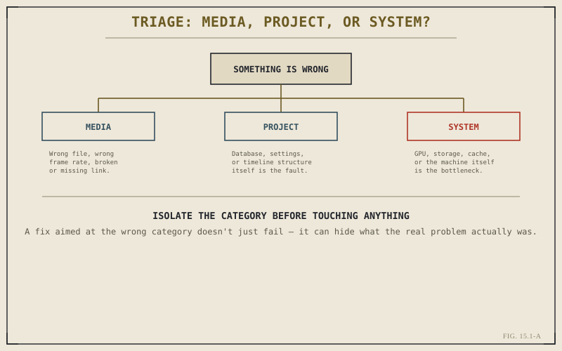

Chapter 14.5 closed Part XIV on a note of applied craft — genre after genre, the same toolkit put to correct, deliberate use. Part XV assumes something different: that despite correct use, something eventually breaks. A clip won't relink. Audio drifts out of sync three minutes into a timeline. A project refuses to open. This opening chapter isn't about any specific failure. It's about the method worth having in place before any of them happen — a way of approaching a broken project that doesn't depend on already knowing what's wrong.
A Symptom Is Not a Cause
The single most common mistake in troubleshooting any software, editing tools included, is treating the visible symptom as the actual problem. A clip that plays back stuttering isn't necessarily a corrupted file — it might be a proxy that silently fell back to full-resolution media, a cache setting reverted by an update, or a GPU under more load than the timeline's effects actually require. Fixing the symptom directly, without first identifying what's producing it, tends to either fail outright or appear to work while leaving the actual cause untouched, ready to resurface later in a different form.
Isolating the Variable: Media, Project, or System?
Nearly every problem an editor runs into in Resolve sorts cleanly into one of three categories, and figuring out which one first is most of the actual diagnostic work. A media problem lives in the footage itself — wrong frame rate, a broken file, a link pointing at a drive that's no longer connected. A project problem lives in the project's own structure or database — corrupted settings, a broken timeline reference, an internal inconsistency independent of the footage. A system problem lives outside both, in the machine running Resolve — GPU load, storage speed, memory pressure, exactly the territory Chapter 13.2 covered as the real bottlenecks behind most performance complaints. The same visible symptom, a stutter or a missing frame, can originate from any of the three, and the fix for one does essentially nothing for the other two.

Three categories, three different fixes — the first job is figuring out which one you're actually in.
Reproducing the Problem Before Touching Anything
Before attempting any fix, it's worth confirming the problem happens reliably and understanding exactly when. Does it occur on this one clip, or every clip on that track? Every time the timeline plays, or only after scrubbing quickly? On this project only, or on a new, empty one too? Each of these questions narrows the field of what could actually be responsible, and a problem that can't be reproduced at all is a problem that can't be confirmed fixed either — which makes any change applied to it, by definition, a guess rather than a repair.
A fix aimed at the wrong category doesn't just fail to help — it can actively mislead, appearing to work by coincidence while the actual cause sits untouched, waiting to resurface at a worse moment.
The Cost of Guessing
It's tempting, under deadline pressure, to skip straight to trying things — reinstalling, clearing every cache in sight, rebuilding a project from scratch — in the hope that something in that list happens to land on the actual fix. This occasionally works, and that occasional success is exactly what makes it a bad habit: it teaches an editor to reach for broad, disruptive actions instead of narrow, diagnosed ones, and it burns real time chasing fixes for problems that were never actually identified in the first place.
A Method for the Rest of This Part
Every chapter that follows in Part XV is, structurally, an application of this same triage: identify which category a symptom actually belongs to, confirm it reproduces, and only then apply a fix specific to that category. Chapter 15.2 starts with one of the most common cases in the media category — audio drifting out of sync with picture over the course of a timeline, and why that drift is rarely the mystery it first appears to be.
Key Concepts to Remember
- A visible symptom is not the same as its cause — fixing the symptom directly often fails or only masks the real problem.
- Nearly every Resolve problem sorts into one of three categories — media, project, or system — and the fix for one rarely helps another.
- Confirming a problem reproduces reliably, before attempting a fix, is what makes it possible to confirm the fix actually worked.
- Broad, undiagnosed fixes occasionally work by coincidence, which is exactly what makes them a costly habit to rely on.
Cross-References Forward
| → Ch. 15.2 | Sync Drift and Audio Problems — the first applied case, starting in the media category this chapter defined. |
| → Ch. 14.5 | Revisit music video and rhythm-driven editing, the closing chapter of applied craft this part now turns from. |
| → Ch. 2.7 | Revisit project settings that actually matter, often the first place a project-category problem is hiding. |